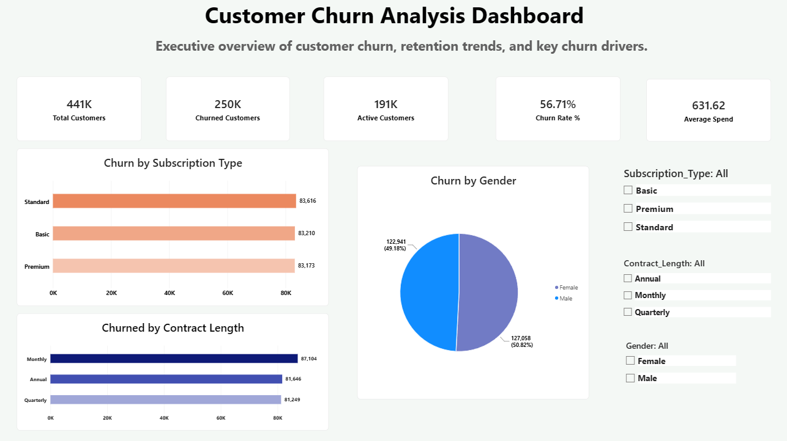
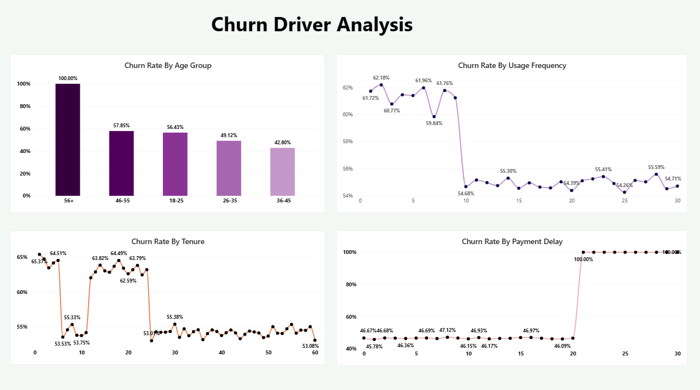

SQL Server + Power BI Business Analytics Project
Customer churn is a major challenge for subscription-based businesses. This project analyzes customer demographics, engagement patterns, spending behavior, and payment history to identify key drivers of customer attrition and provide actionable retention strategies.
The company is experiencing a high churn rate and wants to understand:
Total Records: 440,833


Customers with lower product usage showed significantly higher churn rates than highly engaged customers.
Newer customers displayed higher churn rates compared to long-tenure customers.
Customers with prolonged payment delays demonstrated substantially higher churn rates.
Certain age groups exhibited higher churn tendencies, highlighting opportunities for targeted retention efforts.
This analysis identified key behavioral indicators of customer churn and provided actionable recommendations that can help improve customer retention and long-term business performance.